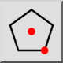
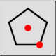
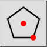
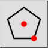

Polygon (Center, Corner)
Toolbar / Icon:
 

Menu: Draw > Shape > Polygon (Center, Corner)
Shortcuts: P, G, 1 | H, C
Commands: linepolygon | polygon | pg1
Toolbar / Icon:
 

Menu: Draw > Shape > Polygon (Center, Corner)
Shortcuts: P, G, 1 | H, C
Commands: linepolygon | polygon | pg1
Creates polygons with the center and one corner given.